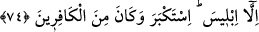

74. Yalnız İblis secde etmedi. O büyüklük tasladı ve kâfirlerden oldu.
“Yalnız İblis secde etmedi.” Buradaki istisnâ muttasıl bir istisnâdır. Zira o, tür olarak
“cin”lerden fakat fiilen meleklerden idi. Bu sebepledir ki onlara verilen emir bunu da
kapsıyordu. Allah’ın rahmetinden kovulmadan önce İblis’in adı Azâzîl ve el-Hâris;
künyesi ise Ebû Kerdûs ve Ebû Mürre idi. Bu noktada, peki secdeyi niçin terketti, bu
davranışı bir düşünceden mi ileri geliyordu, yoksa bir başka sebebi mi vardı, şeklinde
bir soru sorulduğu farzedilerek şöyle cevap veriliyor:
“O büyüklük tasladı” (
), boynunu kasmak ve büyüklük taslamak; (
) fiili
ise, kendini büyük gördü ve emir dinlemedi, demektir. Bunun sebebi, İblis’in Allah’ın
Âdem’de tecelli ediş nurlarını göremeyen bir şaşı olmasıdır.
Öyle bir mahfildesin ki, bir zerredir Güneş bile
Kendini büyük görmek sığar mı hiç edebe!
Ve o, Allah’ın ilminde zâtı itibarıyla ezelî bir kâfir; hâricî dünyada da Allah’ın bir
emrini çirkin bularak ebediyyen kâfir olanlardandı. Bu sebeple şakîliği arızî değil, zâtî
bir şakâvet iken, aradaki saîdliği zâtî olmayıp ârızî olmuştur.
Hâfız der ki:
Ben o Süleyman’ın yüzük taşını hiç övmem,
Çünkü zaman zaman üzerinde Ehrimen’in eli olur.
Oysa bizzat (zâtı gereği) olan şeye itibar edilir. Böyle, bizzat olan bir özellik ise
ortadan kalkmaz. Sonradan (bi’l-araz) olan bir şeye itibar edilmez, çünkü bu zâil
olacaktır. Önceleri büyük tecellîlere mazhar iken sonu hüsranla biten Bersîsâ, Bel’am
ve benzerlerinin durumu da bu kabildendir. Hâsılı, mâsiyet içinde bulunanlar hattâ
tâatkârlar bile ilâhî meşîete bağlıdırlar; hiç kimse son olarak nasıl mühürleneceğini
bilemez.
Derler ki: Mâsiyette ısrar etmek pek çok âsîyi küfür üzere ölüme götürür. Bundan
Allah Teâlâ’ya sığınırız! Nitekim bu mânâ, “Sonra, Allah’ın âyetlerini yalanladıkları
ve onlarla alay etmekte oldukları için, kötülük işleyenin sonu daha da kötü oldu.”
(Rûm 30/10) âyet-i kerimesinde geçmişti. Allah’ın âyetleriyle alay etmek ise küfrün ta
kendisidir.
Allah cümlemizi bu davranıştan ve bizi bu davranışa itecek amellerden korusun;
bizleri İslam dîni üzere öldürsün; bizi katında makbul olan kullarından eylesin!
Şüphesiz her durumda duâları işiten O’dur; her hâl ü kârda beklentilere cevap veren